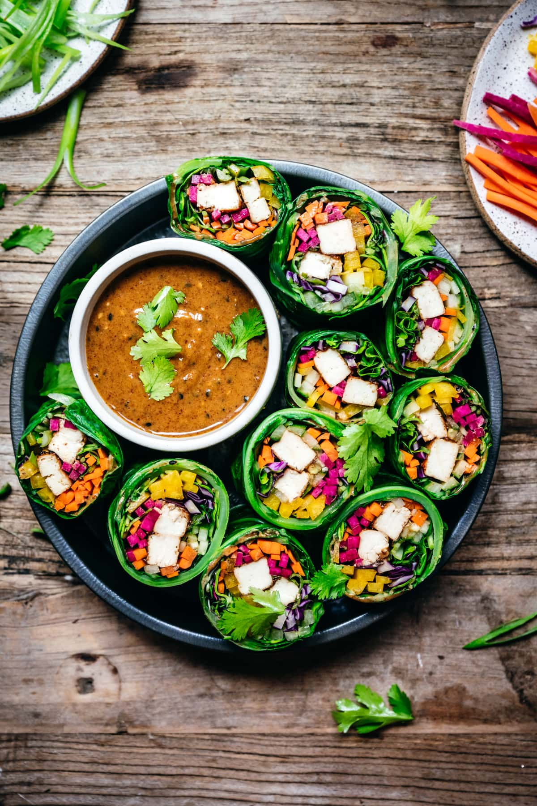

These vegan collard green wraps are packed with fresh rainbow vegetables,
tofu and a creamy almond butter miso sauce. They're a fantastic make-ahead
lunch or healthy snack and they're naturally gluten free!

Ingredients
Tofu
16 oz extra firm tofu, drained and patted dry
2 tbsp low sodium tamari or soy sauce
1 tbsp miso
1 tsp rice vinegar
1 tsp coconut sugar
1 tsp sesame oil (toasted or regular)
Wraps
1 Large bunch collard greens
1 medium yellow bell pepper, julienned
1/2 cup thinly sliced purple cabbage
2 carrots, julienned
1/2 of an English cucumber, julienned
5 radishes, julienned
Optional: microgreens, cilantro and scallions
Almond Miso Sauce
1/4 cup creamy almond butter
2 tbsp low sodium tamari or soy sauce
1 tbsp miso
2 tsp rice wine vinegar
1 1/2 tsp sriracha
1/2 tbsp coconut sugar
1/4 tsp powdered ginger (or fresh grated)
1/4 tsp garlic powder (or 1 clove, finely minced)
1 tbsp water
2 tsp sesame seeds
Steps
Drain tofu well and pat thoroughly dry. If you have time,
wrap tofu in a clean towel and set something heavy on top
(like a skillet) for 20 minutes to remove as much moisture
as possible.
Slice tofu into ½-inch strips. Whisk together tamari, miso,
rice vinegar, coconut sugar and sesame oil and brush onto
tofu.
Heat a skillet to medium and add tofu. Cook for 5-6 minutes
on each side, brushing with more marinade while it cooks,
until crispy and browned.
Meanwhile, prep all vegetables for wraps.
Whisk together all ingredients for almond miso sauce until
smooth and creamy.
Trim the tough spine of each collard green leaf, slicing
lengthwise so that the spine lays as flat as the rest of
the leaf. You should be able to easily bend the spine
without any cracking.
Fill a shallow pot or pan with a few inches of water and
bring to a simmer. Blanch each collard green leaf (one at a
time) in simmering water for 20-30 seconds, until bright
green and slightly tender. Don't leave it in for too long,
otherwise it will be too soft. Let cool slightly.
To assemble the wraps, lay the collard green leaf on a flat
surface. Arrange the filling in the bottom middle, then
fold over the left and right sides and roll up until there
are about 4 inches left. Spread about ½ tablespoon of sauce
on top of leaf, then finish rolling to seal. Slice and
enjoy!